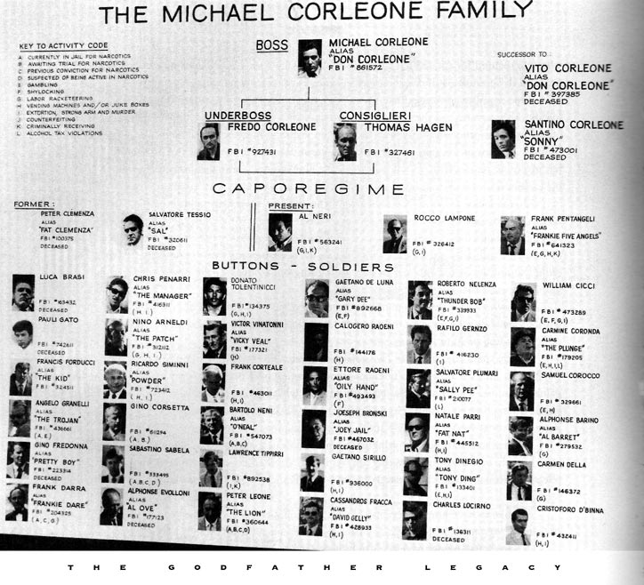

by Tom
Forever. For. Ever.
Generations into the future.
A digital legacy, estate, or trust
Keeping a website up, available, viewable, healthy for:
| 1 Month | Easy! |
| 1 Year | 99.9%. Easy(-ish)! |
| 10 Years | AWS did not exist 10 years ago |
| 100 Years | Hmm. Wut? |
| 1000 Years | LOUD NOISES! |
Predicting the future of the internet (or anything) becomes increasingly hazy.
godaddy domain + dns: $10/yr
google blogger: free
Google announces end-of-life for Blogger
Your hosting company goes out of business
Your hosting plan is deprecated
Your bank goes out of business
Your bank account runs out of money
Breaking changes to web document formats, browser backward compatibility
Make a good guess based on Today's technology
maturity, stability, ubiquity, cost
Blogger CMS
Godaddy Registrar, DNS
Capital One 360 Checking Account
Portable, "Future Proof" Content
Step #2
Build an autonomous, resilient, cost-effective support organization
Mech Turk, Survey Services for Polling, Consensus
Zirtual, Elance, Fiverr for Task Execution
Every X Months
A Site Outage
An Intermediate Task

Diagnose the underlying cause of the outage
If yes, kick off a subsequent task
Is our bank account < 5% of starting balance?
Migrate to best completely free option